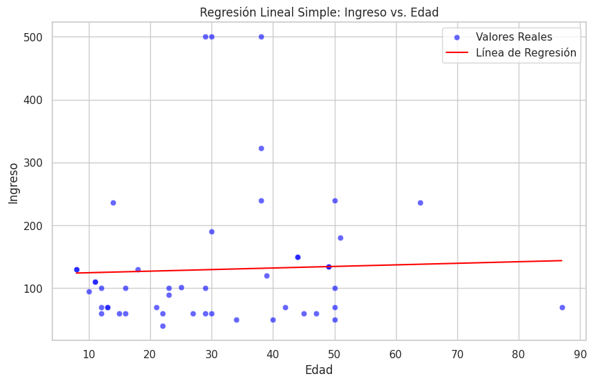

Evolución Operativa y Financiera • Enero a Mayo de 2026
A finales del año 2025, la Dra. Cristina Moreno adquirió una clínica dental en situación de traspaso por jubilación en Cantabria. En el panorama económico actual, iniciar este proyecto exigía avanzar con pies de plomo para asegurar la viabilidad comercial.
Con el fin de evaluar el rendimiento operativo y financiero real, se recopilaron y auditaron los datos correspondientes al primer cuatrimestre completo de actividad del negocio (Enero-Mayo de 2026).
Los datos históricos previos a 2026 se encontraban archivados exclusivamente en formato papel. Ante esta limitación, el equipo procesó de forma manual los primeros registros y construyó un pipeline automatizado para asegurar la consistencia de la información.
Descarga del software de gestión médica en bruto (Datos Bronce).
Eliminación de datos sensibles (DNI, nombres) bajo la LOPD para generar tablas Silver (.CSV).
Modelado relacional en Esquema Estrella (Tablas de hechos y dimensiones de Pacientes, Profesionales y Tratamientos).
Conexión segura mediante túnel de Ngrok a Google Colab para análisis exploratorio y modelos descriptivos.
Despliegue interactivo de KPIs clave y tendencias de negocio para la toma de decisiones.
La clínica muestra una tendencia financiera al alza en el corto plazo, registrando su pico de ingresos más alto en el mes de mayo debido al cierre efectivo de tratamientos complejos. El ticket medio general se situó en 131,70 € por paciente, con una facturación total de 31.100 € en el periodo analizado.
El top de tratamientos por ingresos lo encabezan los Estudios de Ortodoncia (la especialidad de la doctora, con el precio más alto) y la Higiene Dental (de bajo coste pero muy contratada). Entre ambos suponen casi un 60% de los ingresos totales de la clínica.
La tasa de aceptación de presupuestos se estabilizó en un saludable 53,97%, lo que demuestra un diagnóstico clínico inicial sólido en el gabinete de la Dra. Moreno.
La tasa de asistencia es de un 95,63%, lo que implica que un 4,37% de las citas se pierden por cancelaciones o no-shows: de cada 100 citas agendadas, entre 4 y 5 no se llegan a completar. Además, la clínica está sufriendo una preocupante desaceleración en la captación de nuevos pacientes, un factor crítico que vacía agendas y debilita la rentabilidad a largo plazo.
En total se han captado 194 pacientes en el periodo, con una media de 38,8 pacientes/mes. Sin embargo, la tendencia es decreciente: de 62 captaciones en enero a solo 23 en mayo. El grupo predominante son los pacientes menores de 30 años, edad habitual para iniciar tratamientos de ortodoncia.
De media, transcurren 3,50 días entre la realización de un tratamiento y su facturación efectiva. Este plazo se considera dentro de la normalidad y refleja un buen control del flujo de caja de la clínica.
Para responder a esta pregunta se construyó, a través de Google Colab y Python, un modelo de regresión lineal simple que relaciona la variable edad del paciente con el ingreso generado por venta.

El rango de pacientes se concentra entre los 10 y los 50 años, con algún outlier puntual. La mayoría de ingresos por tratamiento no supera los 100 €, aunque a partir de los 30 años comienzan a contratarse tratamientos de entre 200 € y 500 €.
Sin embargo, el modelo arroja un R² de 0,0063: solo el 0,63% de la variabilidad del ingreso se explica por la edad. Este valor ínfimo confirma que la edad, por sí sola, no es un predictor fiable del ingreso. El enfoque de futuras estrategias debería dirigirse a otras variables, como el nivel de ingresos del paciente, el tipo de tratamiento elegido o el plan de pago acordado.
Maximizar el Valor de Cartera: Si bien captar clientes amplía el mercado, es sumamente rentable estructurar dinámicas de fidelización. Un paciente satisfecho que regresa y recomienda los servicios genera ingresos recurrentes con un coste de adquisición prácticamente nulo.
Mitigación de Ausencias: Las ausencias imprevistas o retrasos excesivos entre la programación y la ejecución de la cita dañan la estructura de costes de la clínica. Se recomienda optimizar la disponibilidad del personal clínico, reducir los tiempos de espera en agenda e implementar sistemas automatizados de recordatorio de citas.
Digitalización Progresiva: Es clave evaluar la viabilidad de trasladar gradualmente el archivo histórico físico al software digital. Esto proporcionará un marco analítico histórico sólido para realizar análisis predictivos complejos y detectar patrones estacionales de demanda en Cantabria.
El negocio muestra indicadores financieros saludables en el corto plazo, especialmente gracias al incremento de tratamientos cerrados durante mayo.
Sin embargo, la reducción progresiva de nuevos pacientes representa el principal riesgo estratégico detectado durante el análisis.
La prioridad para los próximos meses debería centrarse en reforzar la captación comercial, mejorar la conversión de presupuestos y continuar monitorizando la evolución de la demanda mediante el dashboard interactivo de Power BI.